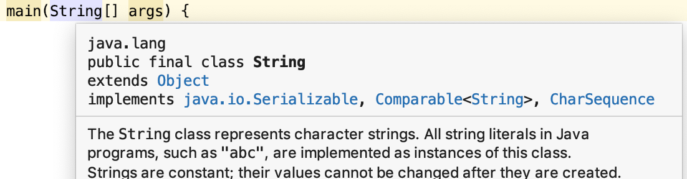
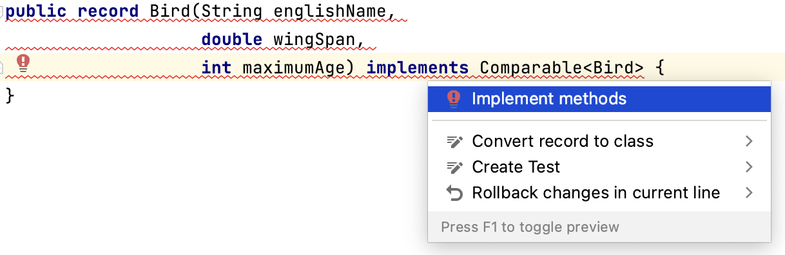

17. Sorting#
Sorting is one of the fundamental operations on data. You want the best student, the closest cafe, all players with a top 10% ranking…this all involves sorting.
Sorting in “classic” Java (not using the Streams API) is done using the the Collections.sort() methods and, since Java 8, some methods in class List. These methods require either (a) that the objects you want to sort implement the Comparable interface or (b) that you provide a sorter object implementing the Comparator interface.
Arrays of primitives (int, double, float, boolean etc.) or objects (if the objects implement Comparable - see below) can be sorted (in-place) using the Arrays.sort() and Arrays.parallelSort()` functions. Have a look at the docs; they will not be discussed here.
17.1. “Natural” sorting with the Comparable interface#
This is the first and main sorting strategy. Whenever the type in your collection implements the Comparable interface, it is said to have “natural ordering”. This interface is described in detail later. Java classes such as String, Integer, and Double all implement the Comparable interface. In IntelliJ you can see this when you select a String variable declaration and press F1 (or ^Q):

You can see Comparable<String> in the implements declaration.
For Strings, natural order means alphabetic order and for numbers numeric order (from low to high). Using natural ordering can be achieved in two places (since Java 8): In the Collections class and in the List interface.
We’ll start with the “classic” method of Collections.
Its signature is rather complex, but fortunately using it is not.
<pre style="color:darkblue;font-weight:bold;font-family:courier;font-size:1.2em;">
public static <span style="color:darkorange;"><T extends Comparable<? super T>></span> void sort(<span style="color:darkgreen;">List<T> list</span>)
</pre>
This signature tells us a lot:
it is static, so it can be used directly on the Collections class
it has
voidas return type, so it sorts a list in place instead of returning a sorted copy.it takes as argument a
Listthe elements of the list are of type
T(a generic placeholder), where the constraint on typeTis that it should implement theComparableinterface - more specifically: aComparablecomparing T or its supertypes.
Key here is the Comparable interface (package java.util):
package java.util;
public interface Comparable<T> {
int compareTo(T other);
}
The contract is really simple. To be comparable to other objects (of the same class), a class needs to implement the method compareTo(T other) where T is the class implementing the interface. The method signature of compareTo() states that it should receive an instance of T and return an integer indicating the sort order of the current object with respect to the other object. The convention for this return value is
a negative value if
this<otherzero if
thisequalsthata positive value if
this>other
Since String and other Java classes already implement this interface, you can sort them without any further work:
List<String> names = new ArrayList<>();
names.addAll(List.of("Jordan", "Wanda", "James", "rose", "Aaron"));
System.out.println("names before sort: " + names);
Collections.sort(names);
System.out.println("names after natural sort: " + names);
This will output
<pre class="console_out">
names before sort: [Jordan, Wanda, James, rose, Aaron]
names after natural sort: [Aaron, James, Jordan, Wanda, rose]
</pre>
As you can see, capitals come before lower case letters.
The exact same thing could have been achieved using the sort() method of class List, added in Java 8:
names.sort(Comparator.naturalOrder());
System.out.println("names after sort on List " + names);
The signature of this sort method is:
public void sort(@Nullable java.util.Comparator<? super E> c)
It takes a Comparator instance; this interface is described in the next section. Some common default Comparators have already been implemented, for natural (Comparator.naturalOrder()) and reverse (Comparator.reverseOrder()) order for use with classes that implement Comparable. Note that the @Nullable in the above signature means that if null is passed, it defaults to Comparator.naturalOrder() An overloaded method would have been better design in my opinion, because this names.sort(null); is really ugly.
Here is the reverse ordering:
names.sort(Comparator.reverseOrder());
System.out.println("names after reverse sort " + names);
outputs
<pre class="console_out">
names after reverse sort [rose, Wanda, Jordan, James, Aaron]
</pre>
Another interesting Comparator is the CASE_INSENSITIVE_ORDER comparator defined in the String class:
names.sort(String.CASE_INSENSITIVE_ORDER);
System.out.println("names case insensitive sort " + names);
outputs
<pre class="console_out">
names case insensitive sort [Aaron, James, Jordan, rose, Wanda]
</pre>
17.1.1. Custom comparable implementations {.unnumbered}#
Let’s create our own implementation of the Comparable interface in a custom class and demonstrate its use.
Here is a simple Bird class.
package snippets.apis;
public class Bird {
String englishName;
double wingSpan;
int maximumAge;
public Bird(String englishName, double wingSpan, int maximumAge) {
this.englishName = englishName;
this.wingSpan = wingSpan;
this.maximumAge = maximumAge;
}
@Override
public String toString() {
return "Bird{" +
"englishName='" + englishName + '\'' +
", wingSpan=" + wingSpan +
", maximumAge=" + maximumAge +
'}';
}
}
The first thing you need to figure out when implementing sorting is what is the natural sort order of this class? This depends entirely on you application: which aspect of your class will be used primarily for sorting. In this case, I choose the wingSpan property.
Next, these steps should be taken:
Declare your class as implementer of the
ComparablecontractCreate the method stub.
Implement the logic
Step 2 is done by IntelliJ once you’ve done 1 and selected te context menu (alt + enter):

Select the single method and press enter. This is the result.
@Override
public int compareTo(Bird other) {
return 0;
}
This compiles just fine, but logic is missing. The next snipped solves that.
@Override
public int compareTo(Bird other) {
//declare named variables for readability
final int BEFORE = -1;
final int EQUAL = 0;
final int AFTER = 1;
//compare
if(this.wingSpan <= other.wingSpan) return BEFORE;
else if (this.wingSpan >= other.wingSpan) return AFTER;
else return EQUAL;
}
Time for a test drive. The toString method was adjusted for readability and compactness. Also, a Java8+ feature (Streams API) was used for printing (not part of this courses’ material).
List<Bird> birds = new ArrayList<>();
birds.add(new Bird("Buzzard", 1.3, 29));
birds.add(new Bird("Griffon vulture", 2.6, 25));
birds.add(new Bird("Kestrel", 0.35, 15));
birds.add(new Bird("Red kite", 1.8, 23));
birds.add(new Bird("Steppe eagle", 2.1, 41));
System.out.println("Before:");
//prints addition order using Java8 streams
birds.stream().forEach(bird -> System.out.println("\t" + bird));
Collections.sort(birds);
System.out.println("After sort on wingspan:");
//prints sort order on wingspan, ascending
birds.stream().forEach(bird -> System.out.println("\t" + bird));
outputs
<pre class="console_out">
Before:
Buzzard', ws=1.3, max.age=29
Griffon vulture', ws=2.5, max.age=25
Kestrel', ws=0.35, max.age=15
White-tailed eagle', ws=2.5, max.age=25
Red kite', ws=1.8, max.age=23
Steppe eagle', ws=2.1, max.age=41
After sort on wingspan:
Kestrel', ws=0.35, max.age=15
Buzzard', ws=1.3, max.age=29
Red kite', ws=1.8, max.age=23
Steppe eagle', ws=2.1, max.age=41
Griffon vulture', ws=2.5, max.age=25
White-tailed eagle', ws=2.5, max.age=25
</pre>
Note the ascending order of wingspan. What if the natural order is descending in your opinion? Simply reverse the sort logic:
@Override
public int compareTo(Bird other) {
final int BEFORE = -1;
final int EQUAL = 0;
final int AFTER = 1;
if(this.wingSpan <= other.wingSpan) return AFTER;
else if (this.wingSpan >= other.wingSpan) return BEFORE;
else return EQUAL;
}
outputs
<pre class="console_out">
After:
Griffon vulture', ws=2.6, max.age=25
Steppe eagle', ws=2.1, max.age=41
Red kite', ws=1.8, max.age=23
Buzzard', ws=1.3, max.age=29
Kestrel', ws=0.35, max.age=15
</pre>
Although this sort logic is just fine, it is often better to use classes that are dedicated to dealing with the datatype and delegate to their implemented and tested methods:
@Override
public int compareTo(Bird other) {
//delegate to class double
return Double.compare(this.wingSpan, other.wingSpan);
}
17.2. Sorting using a custom Comparator#
What if you want to sort in other ways as well, or if you do not want to settle on a natural sort order? Then there is the second form of the Collections.sort() method, also supported by the List.sort() method since Java 8:
<pre style="color:darkblue;font-weight:bold;font-family:courier;font-size:1.2em;">
public static <span style="color:darkred;"><T></span> void sort(<span style="color:darkgreen;">List<T> list</span>, <span style="color:darkorange;">Comparator<? super T> c</span>)
</pre>
or
<pre style="color:darkblue;font-weight:bold;font-family:courier;font-size:1.2em;">
public void sort(<span style="font-style: italic;">@Nullable</span> <span style="color:darkorange;">Comparator<? super E> comparator</span>)
</pre>
The Comparator interface has a single abstract method:
package java.util
public interface Comparator<T> {
int compare(T one, T two);
}
Let’s start with the most straightforward implementation.
package snippets.apis;
import java.util.Comparator;
public class BirdNameComparator implements Comparator<Bird> {
@Override
public int compare(Bird first, Bird second) {
return first.englishName.compareTo(second.englishName);
}
}
This one sorts on name, and again delegates to the type of the instance variable - class String. This is its usage.
Collections.sort(birds, new BirdNameComparator());
//or, the Java8+ way
birds.sort(new BirdNameComparator())
Implementations of the Comparator interface are often created on-the-fly. For instance, look at this anonymous inner class.
Collections.sort(birds, new Comparator<Bird>(){
@Override
public int compare(Bird first, Bird second) {
return Integer.compare(first.maximumAge, second.maximumAge);
}
});
Actually, since Java8, sorting has become much versatile, but you need to climb the learning curve of lambdas first:
//Java8+ alternative: OK
Collections.sort(birds, (birdOne, birdTwo) -> Integer.compare(birdOne.maximumAge, birdTwo.maximumAge));
//Java8+ alternative: best
Collections.sort(birds, Comparator.comparingInt(bird -> bird.maximumAge));
Lambdas are out of scope for this course, unfortunately.
17.3. Multilevel sorting#
The final part of this post does not deal with the API but with the logic to implement it. You have seen how to code simple comparison logic. But what if you want to sort on multiple properties? Suppose, in the case of the birds example, we wanted to sort on wingspan first and then on name. No matter how many properties, the pattern is always the same: check the primary property, return this if they are not equal. If they are equal, check on the secondary property:
@Override
public int compareTo(Bird other) {
int compareWingSpan = Double.compare(this.wingSpan, other.wingSpan);
if (compareWingSpan == 0) {
return this.englishName.compareTo(other.englishName);
}
return compareWingSpan;
}
Note that with alphabetical sorting capitals come before lower case letters. This is because the numeric values of the table of ASCII codes are used: